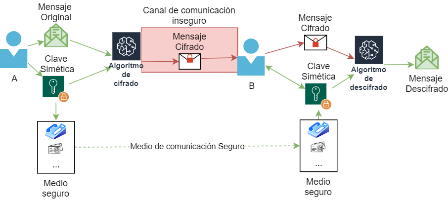

Sesión 3: La criptografía
Para que nuestra información sea privada, necesitamos "esconderla". La Criptografía es la técnica que transforma un mensaje legible en uno cifrado que solo quien tenga la llave puede leer.
Existen dos formas principales de cerrar estos candados:
- Cifrado Simétrico: Se usa la misma llave para cifrar y descifrar. Es muy rápido pero tiene un problema: ¿cómo le envías la llave a la otra persona sin que nadie la robe por el camino?
- Cifrado Asimétrico: Es el más seguro para internet. Tienes dos llaves:
- Llave Pública: Todo el mundo la conoce. Sirve para que te envíen mensajes cifrados.
- Llave Privada: Solo tú la tienes. Es la única que puede abrir los mensajes que se cifraron con tu llave pública.

Sesión 3: Seguridad en la Web
Cuando entras en una web que empieza por HTTPS, tu navegador y el servidor están usando una mezcla de cifrado simétrico y asimétrico.
El candado te asegura que nadie en la red (ni el vecino, ni el operador de internet) puede leer lo que escribes (contraseñas, tarjetas, etc.).
¡Cuidado! El candado significa que la conexión es privada, pero no garantiza que el dueño de la web sea de confianza. Siempre comprueba la URL.
Sesión 3: Tu DNI digital
El Certificado Digital es un archivo que confirma tu identidad en internet. Está emitido por una entidad de confianza (como la FNMT). Con él, puedes realizar la Firma Electrónica.
Una firma electrónica garantiza:
- Autenticidad: Sabemos quién firma.
- Integridad: El documento no se ha modificado después de firmar.
- No repudio: No puedes decir que no lo has firmado tú.
Sesión 4: Tarea 2
Vamos a poner en práctica lo aprendido convirtiéndonos en usuarios y usuarias de la administración electrónica.
- Asegúrate de que el software AutoFirma está instalado en tu equipo.
- Crea un documento de texto sencillo (Word o PDF) llamado Compromiso_Seguridad_Nombre.pdf.
- Abre AutoFirma, selecciona tu documento y fírmalo utilizando el certificado de pruebas que te facilitará el profesorado.
- Entra en la web de VALIDE (Red SARA) y sube tu archivo para verificar que la firma es válida.
- Entrega: Sube a la tarea de Educamos una captura de pantalla del resultado de la validación en VALIDE.